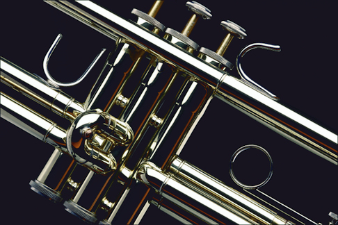
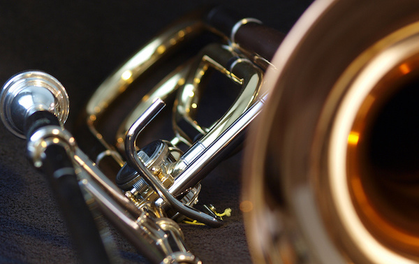
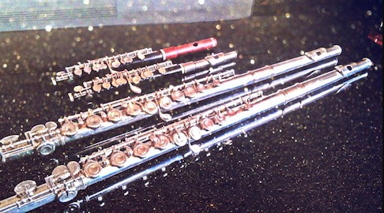
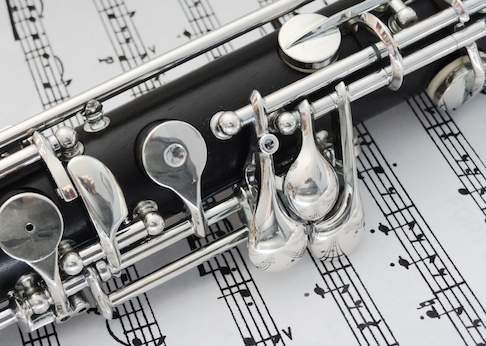
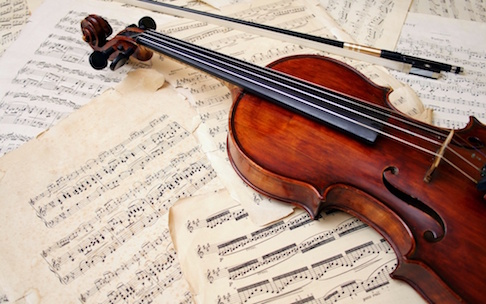
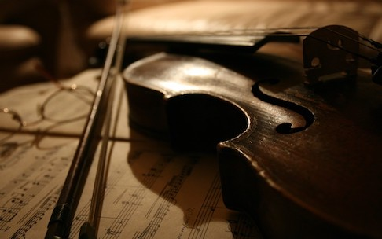
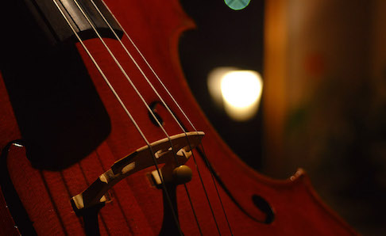

楽器をクリックしてみてください

×


Percussion
りこ
RIKO
Perc.
小学生の時から続けていたトランペットに別れを告げ、この度憧れのティンパニを担当することに。
憧れの先輩に少しでも近づくため、メトロノームと向かい合う日々です！
トランペットが恋しくなる、なんてこと、もちろんありませんよ…？！
これからはパーカス一筋、決して浮気はいたしません！！
ところで最近の悩みはボキャブラリーの少なさ。特に形容詞の貧しさは、オケ部1☆
語彙力もパーカスの実力も、少しでもUPしたい今日この頃。
（文章: Fl. はるな）
憧れの先輩に少しでも近づくため、メトロノームと向かい合う日々です！
トランペットが恋しくなる、なんてこと、もちろんありませんよ…？！
これからはパーカス一筋、決して浮気はいたしません！！
ところで最近の悩みはボキャブラリーの少なさ。特に形容詞の貧しさは、オケ部1☆
語彙力もパーカスの実力も、少しでもUPしたい今日この頃。
（文章: Fl. はるな）
Horn
おーか
OHKA
Hr. I
ホルンは世界で一番素晴らしい楽器です。最初に言っておきます。(みんな自分の楽器が一番のはず…)
実はオケの花形の某弦楽器も弾きます。ホルンよりずっと長くやってました。でもホルンの方が好きです。それほど素晴らしいんです。
頑張っていることは部長のお仕事との両立。言い訳をせず、楽器ももっと上達したいと思ってます。
最近の悩みは肩こり、あっいや、二人称が「部長」になりつつあること。嬉しい反面…さて、アイデンティティとは。
実はオケの花形の某弦楽器も弾きます。ホルンよりずっと長くやってました。でもホルンの方が好きです。それほど素晴らしいんです。
頑張っていることは部長のお仕事との両立。言い訳をせず、楽器ももっと上達したいと思ってます。
最近の悩みは肩こり、あっいや、二人称が「部長」になりつつあること。嬉しい反面…さて、アイデンティティとは。
ふるぽん
FURUPON
Hr. II
何か楽器をできるようになりたい。そう思って挑戦したホルン。金管楽器の中で一番難しいとギネスに載っていたり、CやFなど初めての音楽用語に触れ、「初心者がやってよかったのかな？！」と初めてのことだらけで正直ビビりっぱなしの日々です。少しずつ吹けるようになり、ホルンの奥の深さと素晴らしさを感じています。
もっとホルンを知るためにも勉強しないと…あ、学校の勉強もしないと…
もっとホルンを知るためにも勉強しないと…あ、学校の勉強もしないと…

Trumpet
しーちゃん
SHI-CHAN
Tp. I
トランペットから始まりユーフォ・チューバからの再びトランペットという行ったり来たりの楽器人生です…!!気付けば金管楽器も9年目…ペットと
チューバという両極を経験したので勝手に金管楽器制覇した気になってます(笑)まだまだ高音が苦手です。誰か簡単に高音が出せる唇を開発してください。でもそんなことは言ってられない…!!顔を真っ赤にして吹いていたら、そのときは頑張っているので見守ってあげてください
なかじ
NAKAJI
Tp. II
金管楽器といえばトランペット！！知ってる人も多いハズ！その小さな楽器に秘められた音楽という名の大きな力を皆様に届けられるよう日々頑張っています。僕たちの音楽を聴きながらゆっくりしていってね！

Trombone
まっさん
MASSAN
Trb. I
「運命やるの？トロンボーンは？」というレベルの楽譜の少なさ。4楽章しかありません。
でも、そこがトロンボーンの醍醐味。トロンボーンが、演奏が4楽章に入った時の金管の輝きと厚みを別格にするのです。
レア物のアルトトロンボーンまで用意して4楽章の合奏を待ち望む日々であります。
でも、そこがトロンボーンの醍醐味。トロンボーンが、演奏が4楽章に入った時の金管の輝きと厚みを別格にするのです。
レア物のアルトトロンボーンまで用意して4楽章の合奏を待ち望む日々であります。
さくら
SAKURA
Trb. II
華々しい高音から堂々たる低音まで、全てを吹きこなせるのがこの楽器！例えメロディでなくとも、曲の中で重要なポジションを担っているのは間違いなし！左手がつろうと、右手が変形しようと、素晴らしい楽器であることに変わりはありません☺️

Flute
かっぴぃ！！！
KAPPI!!!
Fl. I
「あれ...？さっきまで荒れ狂い自撮り狂っていた、女子高生か男子小学生か分からない子がフルート...？しかもめっちゃうまい...」
オケ部1番のギャップ人、かえちゃん。強豪校出身で、持ち前の音感と技術でどんな曲も吹きこなす。それではお聴き下さい、フルートを誰よりも愛し、フルートからも愛されたJKの感動の実話、今年度オケデミー賞受賞「うち、ギリ追試じゃないからね」
(文章: Per. めい)
オケ部1番のギャップ人、かえちゃん。強豪校出身で、持ち前の音感と技術でどんな曲も吹きこなす。それではお聴き下さい、フルートを誰よりも愛し、フルートからも愛されたJKの感動の実話、今年度オケデミー賞受賞「うち、ギリ追試じゃないからね」
(文章: Per. めい)
はるな
HARUNA
Fl. I
彼女のフルートとの出会いは中１のとき。それ以来一途にフルートを続けてきました。いつもえらく楽しそうに吹いています。フルートへの愛は誰にも負けません。(その割にはよく楽器を壊しているのを見ますね)
体全体を使って表現する彼女の音はとても綺麗でまるで小鳥のさえずりのよう。鳥みたいにうるさい子という意味ではありません。お淑やかな女の子です。
存分に櫻井さんのフルートに恋しちゃってください！！
(文章: Per. りこ)
体全体を使って表現する彼女の音はとても綺麗でまるで小鳥のさえずりのよう。鳥みたいにうるさい子という意味ではありません。お淑やかな女の子です。
存分に櫻井さんのフルートに恋しちゃってください！！
(文章: Per. りこ)

Oboe
ちゃろ
CHARO
Ob. I
みんなが彼と自撮りたい！オケ部のアイドル兼指揮者です！毎日部活に来て、オケ部のために一生懸命仕事をしてくれます。
チャームポイントは何と言っても裏表のないあの笑顔！あだ名は『ちゃろ』。その名の通り可愛い奴です。誰に対しても分け隔てなく優しく接してくれます！ほんと神♡おーっと、これ以上言うとちゃろくん照れちゃうかな〜♡♡
ところで、ちゃろはオーボエが神うまいです（初めて事実を述べたかも）まぁ、滅多にオーボエ吹くちゃろはお目にかかれません。なぜかって？それは部活に… (文章: Fg. ももや)
チャームポイントは何と言っても裏表のないあの笑顔！あだ名は『ちゃろ』。その名の通り可愛い奴です。誰に対しても分け隔てなく優しく接してくれます！ほんと神♡おーっと、これ以上言うとちゃろくん照れちゃうかな〜♡♡
ところで、ちゃろはオーボエが神うまいです（初めて事実を述べたかも）まぁ、滅多にオーボエ吹くちゃろはお目にかかれません。なぜかって？それは部活に… (文章: Fg. ももや)
ゆまこ
YUMAKO
Ob. II
オーボエを吹きこなすスーパー1年生！部活に対してと学校の課題に対してのやる気の差があり過ぎる面白い子です。
パートの先輩のことを「優しくて欠点がない」なんて言えちゃうくらい心が優しい！ほんとに？言っちゃってもいいんだよ？って私が聞き返したって、決して先輩の愚痴はいいません。笑顔に騙されてるよ！！！！
そんな彼女はなんと〜！入部1年目にして辛夷祭ではトップを務めます。なんてったって音が綺麗！毎日自主練に来てる努力家なんです。運命のソロは必聴ですよ、お楽しみに♡♡♡ (文章: Fg. ももや)
パートの先輩のことを「優しくて欠点がない」なんて言えちゃうくらい心が優しい！ほんとに？言っちゃってもいいんだよ？って私が聞き返したって、決して先輩の愚痴はいいません。笑顔に騙されてるよ！！！！
そんな彼女はなんと〜！入部1年目にして辛夷祭ではトップを務めます。なんてったって音が綺麗！毎日自主練に来てる努力家なんです。運命のソロは必聴ですよ、お楽しみに♡♡♡ (文章: Fg. ももや)
Clarinet
親愛なるクラリネットへ
みんなを虜にするそのシックな見た目も優しい音。
見た目は厳しそうなのに、こんなにも優しいなんて。
真剣なところ、甘く優しい何もかもを包み込むような音色、みんなを引っ張ってくれるような力強さ。
どれも魅力的で目が離せなくなる。
他にも華やかな楽器はあるけれど、もう君しか愛せない。
君が世界一カッコいいよ。
みんなを虜にするそのシックな見た目も優しい音。
見た目は厳しそうなのに、こんなにも優しいなんて。
真剣なところ、甘く優しい何もかもを包み込むような音色、みんなを引っ張ってくれるような力強さ。
どれも魅力的で目が離せなくなる。
他にも華やかな楽器はあるけれど、もう君しか愛せない。
君が世界一カッコいいよ。
びしょう
BISHO
Cl. I
クラリネットがよく似合う素敵すぎる先輩は、頭が良くて、スタイル良くて、いつも笑顔で、みんなに優しくて、そのうえ運動神経も抜群！わからないところはなんでも優しく教えてくれて…長所をあげ始めたらきりがない！みんなの憧れ！！スペック高すぎるオケ部１のパーフェクトボーイ…だと私は思ってます！！んんん？？？彼女持ちですか！？残念だなぁ…って！部内ですか！？まぶしすぎる…
(文章: Cl. すずこ)
(文章: Cl. すずこ)
すずこ
SUZUKO
Cl. II
クラリネットかっこいい！！
クラリネットへの愛なら誰にも負けない！
そんな元気でハツラツな後輩ちゃんですが、本人曰く「最近自分のキャラの崩壊を感じる」とのこと…。
小学校からクラリネットを始めた彼女、その時の癖が抜けず間違えると手を上げるのですが、吹いてるこっちはその姿がどうしても面白く見えてこっちまで吹けなくなる始末(笑)
(文章: Cl. びしょう)
クラリネットへの愛なら誰にも負けない！
そんな元気でハツラツな後輩ちゃんですが、本人曰く「最近自分のキャラの崩壊を感じる」とのこと…。
小学校からクラリネットを始めた彼女、その時の癖が抜けず間違えると手を上げるのですが、吹いてるこっちはその姿がどうしても面白く見えてこっちまで吹けなくなる始末(笑)
(文章: Cl. びしょう)
Basoon
ももや
MOMOYA
Fg. I
運指ニモマケズ
重サニモマケズ
知名度ノ低サニモ部員ノ煽リニモマケヌ
丈夫ナココロヲモチ
ソロハナク（※あります）
決シテサボラズ
イツモ健気ニ練習シテヰル
一日二ロングトーント
音階トタンギングト少シノ曲練ヲシ
アラユル分奏デ
自分ハカンジョウニイレラレズ
ヨクミキキサレタトコロデ
結局ワスレラレル
附高ノ別館ノ三階ノ奥ノ
小サナ楽器庫ニヰテ
重サニモマケズ
知名度ノ低サニモ部員ノ煽リニモマケヌ
丈夫ナココロヲモチ
ソロハナク（※あります）
決シテサボラズ
イツモ健気ニ練習シテヰル
一日二ロングトーント
音階トタンギングト少シノ曲練ヲシ
アラユル分奏デ
自分ハカンジョウニイレラレズ
ヨクミキキサレタトコロデ
結局ワスレラレル
附高ノ別館ノ三階ノ奥ノ
小サナ楽器庫ニヰテ
佐伯くん
SAEKI
Fg. II
左デクラリネットガ吹ケバ
ソノ音域ノ広サヲ望ミ
後ロノトロンボーンニ突カレレバ
音量ガ出ルノヲ羨マシガリ
右デフルートガ吹ケバ
ソノメロディ私モ欲シイトイイ
不可能ダカラヤメロトイイ
リードガカビレバナミダヲナガシ
楽器ヲ壊セバオロオロアルキ
ミンナニトッポトイワレ
褒メラレモセズ
見向キモサレズ
サウイフファゴット吹キニ
僕ラハナリタイ
ソノ音域ノ広サヲ望ミ
後ロノトロンボーンニ突カレレバ
音量ガ出ルノヲ羨マシガリ
右デフルートガ吹ケバ
ソノメロディ私モ欲シイトイイ
不可能ダカラヤメロトイイ
リードガカビレバナミダヲナガシ
楽器ヲ壊セバオロオロアルキ
ミンナニトッポトイワレ
褒メラレモセズ
見向キモサレズ
サウイフファゴット吹キニ
僕ラハナリタイ

Violin
しょんしょん
SYONSYON
1 Vn.
初の交響曲ファーストヴァイオリン、そして更に初のコンミス、ハイポジションに次ぐハイポジションに楽譜を貰った最初はびびってましたが、段々ストバイの良さというものも感じてきました。どんな曲でも、キリっとした音と、柔らかい音を使い分けながらお届けします。是非是非いらしてください！
あんな
ANNA
2 Vn.
抜群の音楽センスを持つのにそれを生かさない、オケ部にとって敵なんだかなんなのかよく分かんない不思議ちゃん。だけど実はオケのことすごく良く考えてたり！
彼女が「バイオリン大好き♡」なんて言ってるのを聞いたことがありませんが、他の楽器を馬鹿にしちゃうあたり、本当はバイオリン愛に溢れてるんでしょうね！自分の楽器が1番偉いと思ってる感じが気にくわないな！！！
毒舌家なのに優しさに溢れてる、やればできるのに脱力系、そんなオケ部１扱いづらい彼女の本性はただのキチガイ…近づくべからず。
(文章: Fg. ももや)
彼女が「バイオリン大好き♡」なんて言ってるのを聞いたことがありませんが、他の楽器を馬鹿にしちゃうあたり、本当はバイオリン愛に溢れてるんでしょうね！自分の楽器が1番偉いと思ってる感じが気にくわないな！！！
毒舌家なのに優しさに溢れてる、やればできるのに脱力系、そんなオケ部１扱いづらい彼女の本性はただのキチガイ…近づくべからず。
(文章: Fg. ももや)
かのん
KANON
1 Vn.
実はこの「運命」、幼稚園の時TDLで弾かせてもらったのです。あの頃はエレクトーン、そして今はヴァイオリン、また再会できるとはまさに「運命」。ピアノとギターは長らくお付き合いしてるけどヴァイオリンは初めての挑戦。最近の悩みはチューニングをギター感覚でおこなってしまうため、大幅に音がずれることです。先輩のありがたいお言葉をこころに受けつつ当日頑張ります♩♬
ゆか
YUKA
1 Vn.
オーケストラ部に憧れて入ってから毎日が楽しくて、電車でも授業中でも夢の中でもバイオリンのことで頭がいっぱいです。まさかあの有名なベートーベンの代表作を弾くことになるとは……
勉強よりも、練習してます。左手の指の痺れが今も治りません。一生に一度の高校生活の運命をバイオリンに捧げます。。。
勉強よりも、練習してます。左手の指の痺れが今も治りません。一生に一度の高校生活の運命をバイオリンに捧げます。。。
まこ
MAKO
2 Vn.
バイオリンかわいい♡かっこいい♡楽しそう♡と"運命"を感じて入ったもののあまりの難しさに驚く毎日です。。もちろんバイオリンの素晴らしさ楽しさにも驚いています( °-° )まだバイオリンを始めて3ヶ月ほどですが、先輩方に少しでも近づけるように一日中バイオリンのことばっか考えています!!常にバイオリンのことしか考えていない個性的(JKなのにマイケルジャクソン愛やばい人とか個性的な趣味ある人とか…笑)な1年生同士精一杯がんばるのでぜひいらしてください!!
"運命"を感じて"運命"を弾く私たちが最高の演奏をお届けします！
"運命"を感じて"運命"を弾く私たちが最高の演奏をお届けします！
りんこ
RINKO
2 Vn.
中学の部活はサッカー、受験期の支えとなったのはバスケ、とスポーツを愛していて、ピアノすら習ったことがなかった楽器初心者の私が、なぜかこのオーケストラ部に入り、バイオリンを始めました。その理由を説明すると長いのですが、それが私の「運命」だったのだと考えています。人一倍習得が遅く、まだまだ不協和音が生じることがたくさんありますが、愛しのバイオリンと共に日々成長していけるよう頑張ります!!
みなっち
MINACCHI
2 Vn.
80歳のおじいさんよりも酷いと言われ続けている私の肩。それなのに首を傾けながら演奏せざるをえないというヴァイオリンを選んだのは「運命」を感じたからー。壊れた人形のように首を延々廻しながら授業聞いてる人、それワ・タ・シ(=´∀｀)人(´∀｀=)
ヴァイオリンだけでなくピアノも金管も演奏するの大好きな、純粋な音楽愛者です！音楽の素晴らしさを届けたい！
会場で待ってますo(｀ω´ )o
ヴァイオリンだけでなくピアノも金管も演奏するの大好きな、純粋な音楽愛者です！音楽の素晴らしさを届けたい！
会場で待ってますo(｀ω´ )o

Viola
さゆり
Sayuri
Vla.
彼女の名前は松波小百合。今年Miss辛夷3傑入りした彼女はオーケストラ部のアイドル、通称“さゆり姫”である。実は彼女、現在部活と塾、ピアノ、ヴィオラのレッスン、バレエを両立させているという文武両道の極みである。ちなみに最近めがねを変えた結果、キュートなルックスに加え「知的な感じ」も備わった。そんな彼女の唯一の残念ポイントはラブライバーであることだったが、近頃はやっていないらしく、これはそろそろ春が訪れるのではないかと部員一同期待している。「Missの応援絶対来いよ！」
よしみ
YOSHIMI
Vla.
彼女の名前は今川佳美。身長145cmの中低セクションには欠かせない癒し的存在。中学では吹奏楽部でサックスを吹いており現在はヴィオラを担当している。部活内では「保育園」や「幼稚園」というネタでいじられることが多いが最近眼鏡からコンタクトへ移行した彼女の可愛さには誰もがつい頭を撫でたくなるほどである。しかし意外にもその可愛さとは裏腹に鋭利な言葉で皆をびっくりさせることもある。（笑）そんな彼女が最後に言いたいこと「まだまだ伸びるから！！」
ひかる
HIKARU
Vla.
今までバイオリンを長く続けてきたのに…なぜか始めたビオラ。大きさの違いに混乱しつつも日々邁進してる（多分）。自分の唯一の特技を伸ばそうと入ったオーケストラ部だが、練習嫌いの性格相変わらず…。とりあえずビブラートぐらいは完璧にできるようにしたいな〜。いつも通りの軽いノリでどこまでやりきれるのか自分でもわからない。そんなわけで最後に、「俺提督じゃないよ！！」

Cello
ひなみ
HINAMI
Vc.
おいおいそこのおにいさん、チェロ様を前にして頭が高いぞぉ・・・なにせそこらの五月蝿いおこちゃまな楽器とは格が違うからな・・・チェロの世界に入るだけで大人の階段どぴゅーんさ・・・チェロはいいぞぉ・・・深いぞぉ・・・まあ聴いてきなって・・・泣けるからさぁ・・・
まな
MANA
Vc.
チェロの音色に魅せられてオケ部に入ってから、リアルに充実した高校生活を送っています♡初心者なのでわからないことが多いですが、一年間でどれだけ弾けるようになるか試してみたいです。高校生活の運命をチェロに捧げます…
Contrabass
たいちろー
TAICHIRO
Cb.
小学生の頃にコントラバスを触って以来、僕は楽器といえばコントラバス以外に触れたことがありません。一筋です、浮気はしてません(中学時代は倦怠期でしたが)。ヴァイオリンの仲間が横でドヤ顔しながらかっこいい旋律を弾いていても動じません、コントラバスにはメロディはないけどしっかり役割があるんです！
べ、別に羨ましくなんかないんだからね///
べ、別に羨ましくなんかないんだからね///
Conductor
ちゃろ
CHARO
Ob. I
みんなが彼と自撮りたい！オケ部のアイドル兼指揮者です！毎日部活に来て、オケ部のために一生懸命仕事をしてくれます。
チャームポイントは何と言っても裏表のないあの笑顔！あだ名は『ちゃろ』。その名の通り可愛い奴です。誰に対しても分け隔てなく優しく接してくれます！ほんと神♡おーっと、これ以上言うとちゃろくん照れちゃうかな〜♡♡
ところで、ちゃろはオーボエが神うまいです（初めて事実を述べたかも）まぁ、滅多にオーボエ吹くちゃろはお目にかかれません。なぜかって？それは部活に… (文章: Fg. ももや)
チャームポイントは何と言っても裏表のないあの笑顔！あだ名は『ちゃろ』。その名の通り可愛い奴です。誰に対しても分け隔てなく優しく接してくれます！ほんと神♡おーっと、これ以上言うとちゃろくん照れちゃうかな〜♡♡
ところで、ちゃろはオーボエが神うまいです（初めて事実を述べたかも）まぁ、滅多にオーボエ吹くちゃろはお目にかかれません。なぜかって？それは部活に… (文章: Fg. ももや)
びしょう
BISHO
Cl. I
クラリネットがよく似合う素敵すぎる先輩は、頭が良くて、スタイル良くて、いつも笑顔で、みんなに優しくて、そのうえ運動神経も抜群！わからないところはなんでも優しく教えてくれて…長所をあげ始めたらきりがない！みんなの憧れ！！スペック高すぎるオケ部１のパーフェクトボーイ…だと私は思ってます！！んんん？？？彼女持ちですか！？残念だなぁ…って！部内ですか！？まぶしすぎる…
(文章: Cl. すずこ)
(文章: Cl. すずこ)
附高のギャルと名高い(ウケる笑)
もちろん叩き方もギャル。
昔から太鼓をどんどこどんどこどんどこどんどこ叩いてるので成長が著しいです。
「スネア上手くなったね」って褒められるほどです。
ちなみに岸川さんは花粉症に悩まされています！助けてあげて！！
(文章: Fl. かっぴ)